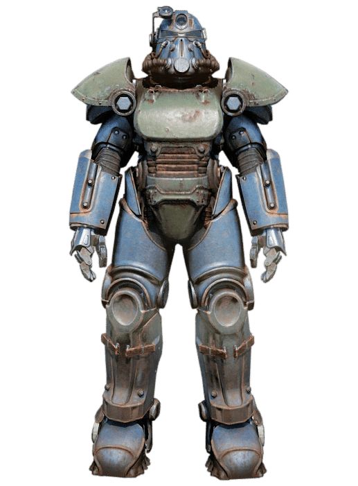
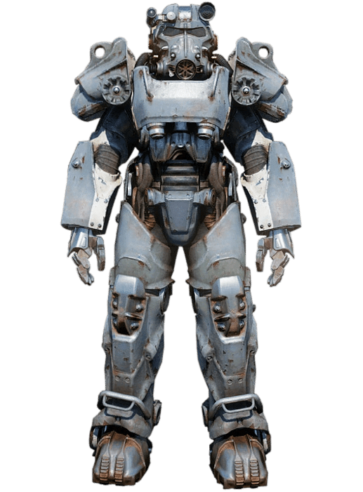
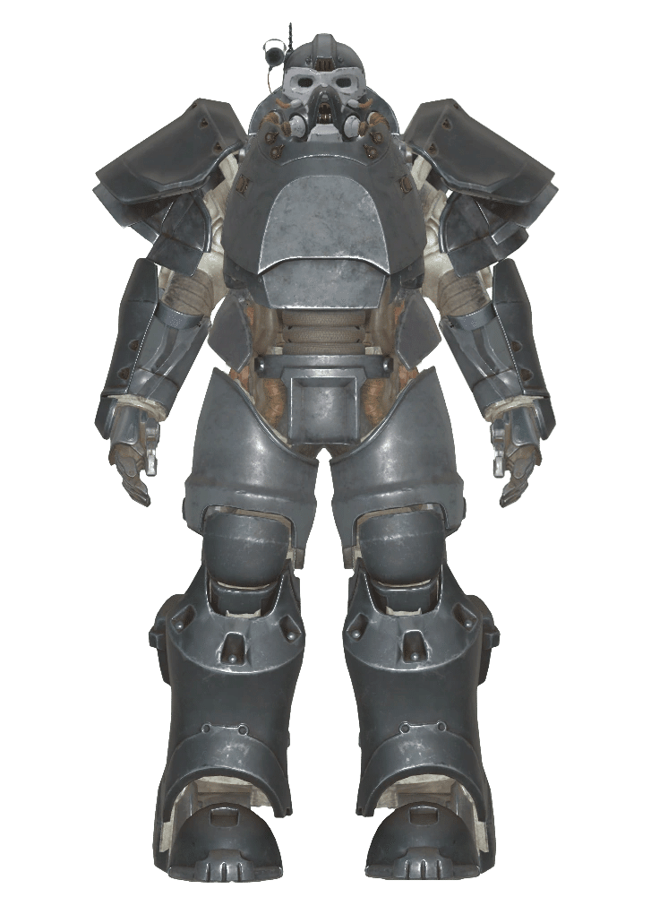
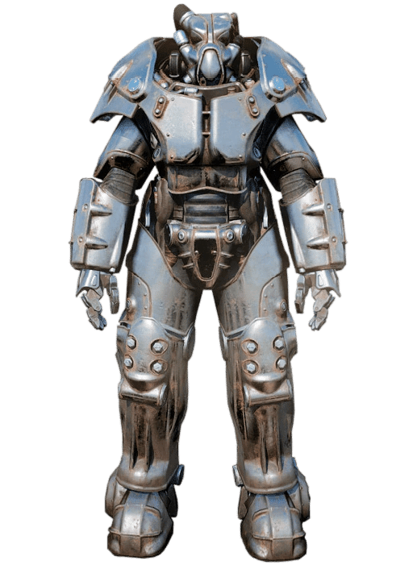
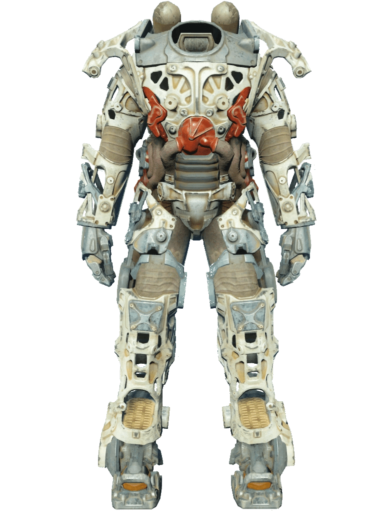
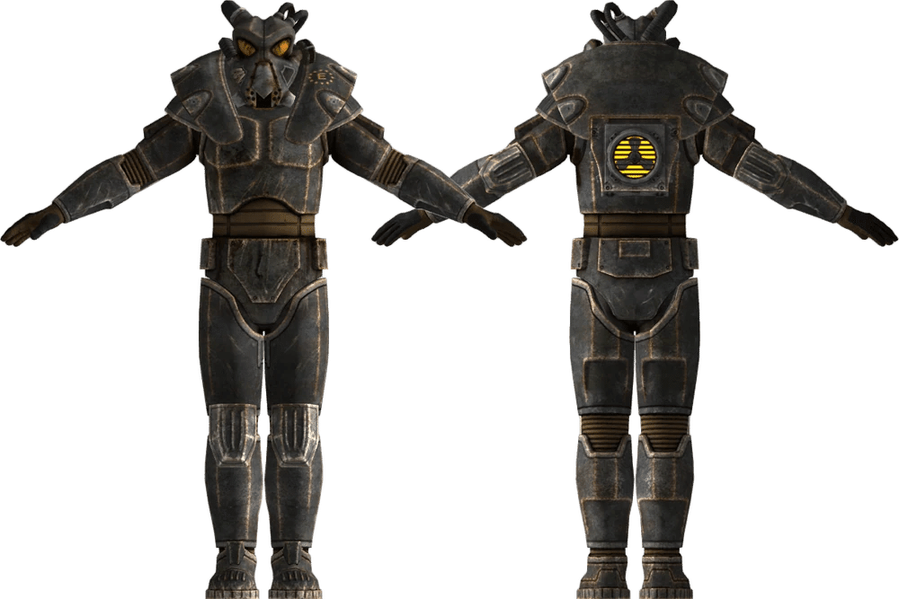
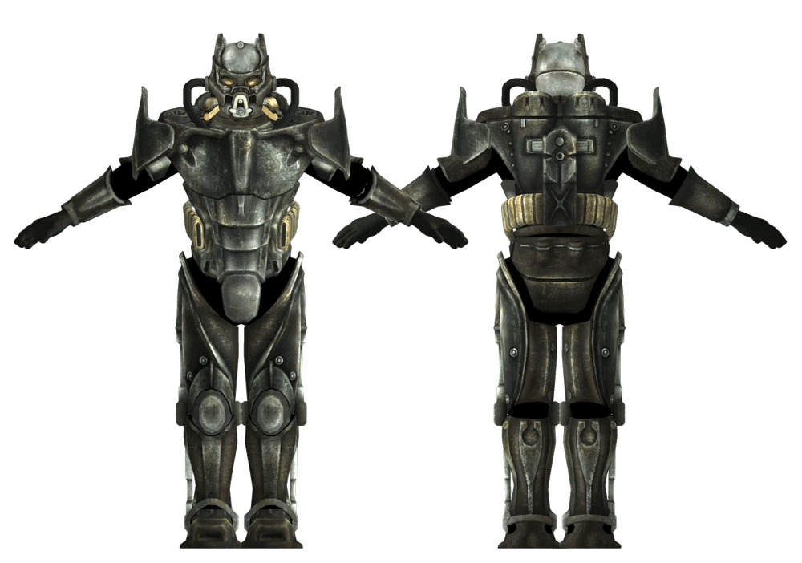
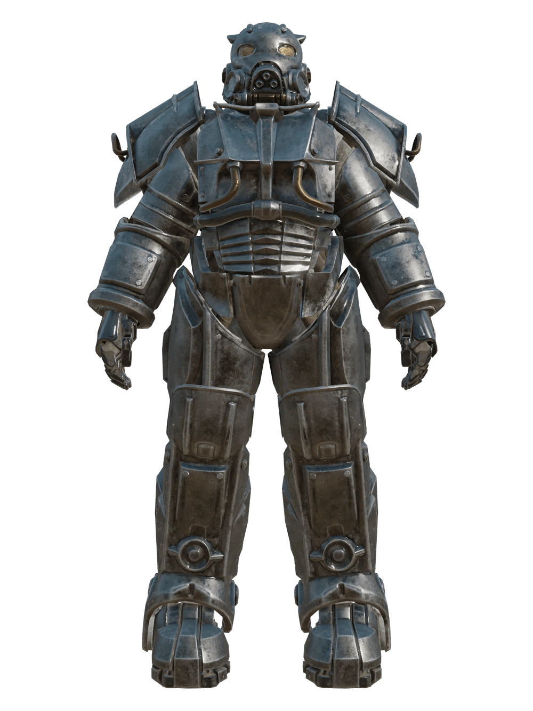
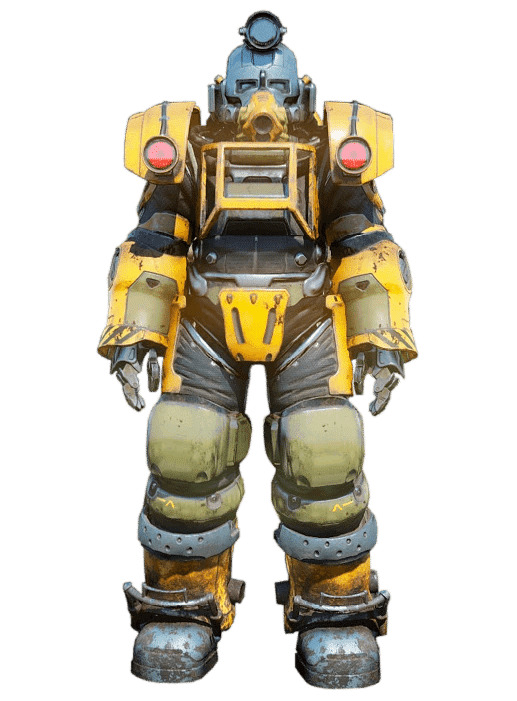
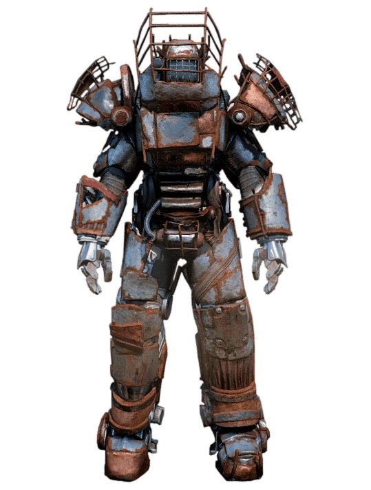

パワーアーマー
開発初期とT-45の登場
開発の背景:
タンクなどの戦闘車両を配備する能力を制限する深刻な資源制約のため、アメリカ軍と国防請負業者は2065年8月に自走式戦闘スーツの開発を開始しました。
これにより、重火器を容易に使用できる移動能力を保持した機械化騎兵部隊が実現しました。融合セルの開発:
この初期段階の最も重要な成果は、融合セル（Fusion Cell）の開発でした。
粗雑ながらも効果的なこの設計は、2066年に世界に公開されました。T-45の投入:
2067年、West Tekが製造した最初のパワード歩兵戦闘アーマー、T-45が中国の攻撃者に対抗するために前線に送られました。
T-45は、中国歩兵と戦車の大群に対抗するための鍵となり、戦場の性質を大きく変えました。
T-51への進化と中国本土侵攻

フレームの確立:
T-45の配備は、後続のすべてのアーマーが製造される基盤となるWest Tekのパワーアーマー・フレームの開発にもつながりました。T-51の開発:
West Tekは、より優れたモデルであるT-51の開発を続けましたが、プロジェクトの野心的な性質により、開発完了までに約10年を要しました。T-45dの限界:
2074年、アメリカのT-45dモデルが中国本土に侵攻しましたが、ガウスライフルなどの新兵器を装備した中国の防御を打ち破るには不十分であることが判明し、アーマーのエネルギー消費率も持続不可能でした。T-51の完成:
これらの挫折にもかかわらず、T-51の問題は最終的に解決され、2076年6月に最初の生産モデルが中国に送られました。
T-51はT-45dのあらゆる面で性能を上回り、アメリカが中国の抵抗を打ち破る手段を提供しました。
核戦争直前のモデル

T-60の導入:
アンカレッジ奪還作戦の完了と同時に、T-45シリーズのアップグレードとして開発され、後に独立したシリーズとなったT-60パワーアーマーが導入されました。


T-65とX-01:
核戦争により、T-51bとT-60が大量生産された最も先進的なデザインとして残りましたが、戦前に極秘裏に開発されたT-65や、終末後の使用を想定して開発が開始されたX-01のような、他の高度なプロトタイプも限定的に存在しました。
戦後の開発
開発の停滞:
核投下後、パワーアーマーの開発は事実上停止しました。
BOSなどの少数の戦後組織は、ウルトラサイトなどのT-51シリーズの新しいバリアントの開発に成功しましたが、基本モデルからの段階的な改善にすぎませんでした。エンクレイヴの再始動:
戦後のアーマー開発における最初の真の進歩は、2198年にオイルリグのエンクレイヴがX-01プロトタイプをベースにした高度なパワーアーマーの開発を再開したことでした。
その結果、2220年に最初のAdvanced power armor（高度なパワーアーマー）が開発されました。ヘルファイア・アーマー:
エンクレイヴのその後の研究により、戦後のパワーアーマー設計の頂点であるエンクレイヴ・ヘルファイア・アーマーが誕生しました。
パワーアーマーのモデル

すべてのパワーアーマーモデルは、West Tekのパワーアーマー・フレームを中心に構築されており、サーボモーター・システムを内蔵し、筋力、外傷耐性、放射線防御を向上させます。
T-45:
米中戦争で最初に投入された初期のデザイン。T-51:
核戦争前の機械化防御の頂点を象徴。T-60:
T-45デザインの進化形であり、核戦争までに広く使用された最も先進的なモデル。T-65:
戦前直前に開発されたユニークなセット。
Vault 79のシークレット・サービスによって設計図が保管されていました。X-01:
Tシリーズの伝統的な設計思想を捨てた、根本的に新しいアプローチ。
戦後、エンクレイヴによって開発が再開されました。


Advanced power armor Mark I/II:
エンクレイヴがX-01プロトタイプをベースに戦後に開発した高度なバージョン。

ヘルファイア・アーマー:
エンクレイヴが開発した戦後パワーアーマー設計の頂点。

EXC-17 エクスカベーター・パワーアーマー:
ガラハン工業が人間鉱夫を助けるために開発した採掘用スーツ。

レイダー・パワーアーマー:
核戦争後にレイダーが残骸から回収・修復した、寄せ集めのアーマー。
ゲームプレイ
電力:
『Fallout 4』以降、パワーアーマーは適切に動作するためにフュージョン・コアを使用します。搭載:
フュージョン・コアはスーツのシャシーに統合された融合炉に装填されます。操作:
パワーアーマーを装備するには、Pip-Boyから装備するのではなく、外部からアクションボタンを押して乗り込む必要があります。トレーニング:
『Fallout 4』以降は、使用にPower Armor Training（パワーアーマー訓練）Perkは不要です。防御:
アーマーコンポーネントには独自のヒットポイントがあり、破壊されるまでダメージを積極的に吸収します。落下ダメージ:
着用者は高い場所から落下してもダメージを受けません。所有権:
『Fallout 76』では、一度乗り込むとプレイヤーキャラクターが排他的に所有し、他のプレイヤーが使用することはできません。
T-60がやっぱり自分は好きだなぁ。
Fallout76のタイトルPAでもあるしね。
Fallout76はバルカンパワーアーマーもあるんですが、とりあえず現時点では正史かどうか分からないので保留にしておきました。
皆の好きなPAは何ですかねー?
This article was created by translating and editing Power Armor from Nukapedia: The Fallout Wiki.
Licensed under the Creative Commons Attribution-Share Alike License (CC BY-SA 3.0).
コミュニティ維持のため、寄付を受け付けております。
> COMMENTS